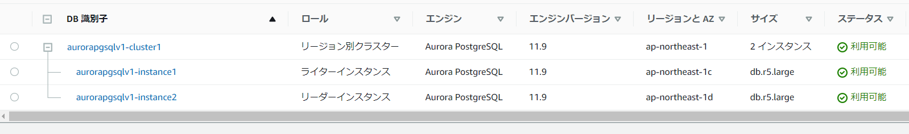

Aurora
Auroracreate-db-cluster → create-db-instanceで作成の流れな模様。1コマンドでは実行出来ないようなので複数回実行する必要がある。
クラスタ作成
aws rds create-db-cluster \
--db-cluster-identifier aurorapgsqlv1-cluster1 \
--engine aurora-postgresql \
--engine-version 11.9 \
--master-username postgres \
--master-user-password postgres \
--db-subnet-group-name devvpc-db-sub-pvt \
--vpc-security-group-ids sg-01f24d968d81d144a \
--availability-zones "ap-northeast-1a" "ap-northeast-1c" "ap-northeast-1d" \
--port 5432 \
--database-name postgres
create-db-cluster — AWS CLI1.20.3コマンドリファレンス https://docs.aws.amazon.com/cli/latest/reference/rds/create-db-cluster.html
インスタンス作成
aws rds create-db-instance \
--db-instance-identifier aurorapgsqlv1-instance1 \
--db-instance-class db.r5.large \
--engine aurora-postgresql \
--engine-version 11.9 \
--availability-zone "ap-northeast-1c" \
--db-cluster-identifier aurorapgsqlv1-cluster1 \
--db-parameter-group-name aurora-pgsql11
リードレプリカを作成する際にはもう一度同じコマンドを実行
aws rds create-db-instance \
--db-instance-identifier aurorapgsqlv1-instance2 \
--db-instance-class db.r5.large \
--engine aurora-postgresql \
--engine-version 11.9 \
--availability-zone "ap-northeast-1d" \
--db-cluster-identifier aurorapgsqlv1-cluster1 \
--db-parameter-group-name aurora-pgsql11
create-db-instance — AWS CLI 1.20.3 Command Reference https://docs.aws.amazon.com/cli/latest/reference/rds/create-db-instance.html
結果
下記の通り、マネージドメントコンソール上からも確認が出来た。
